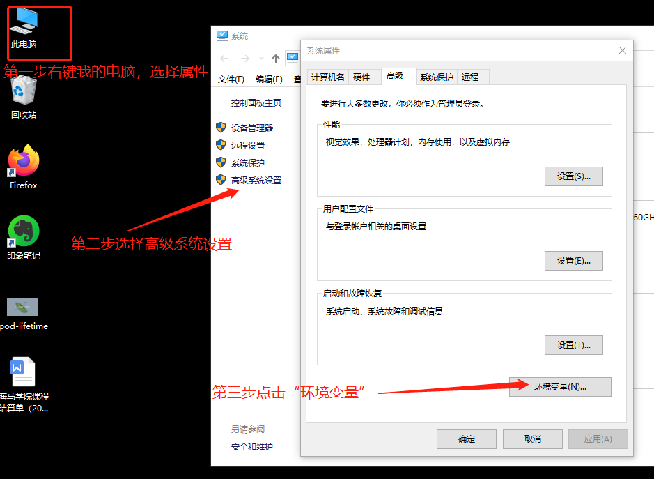
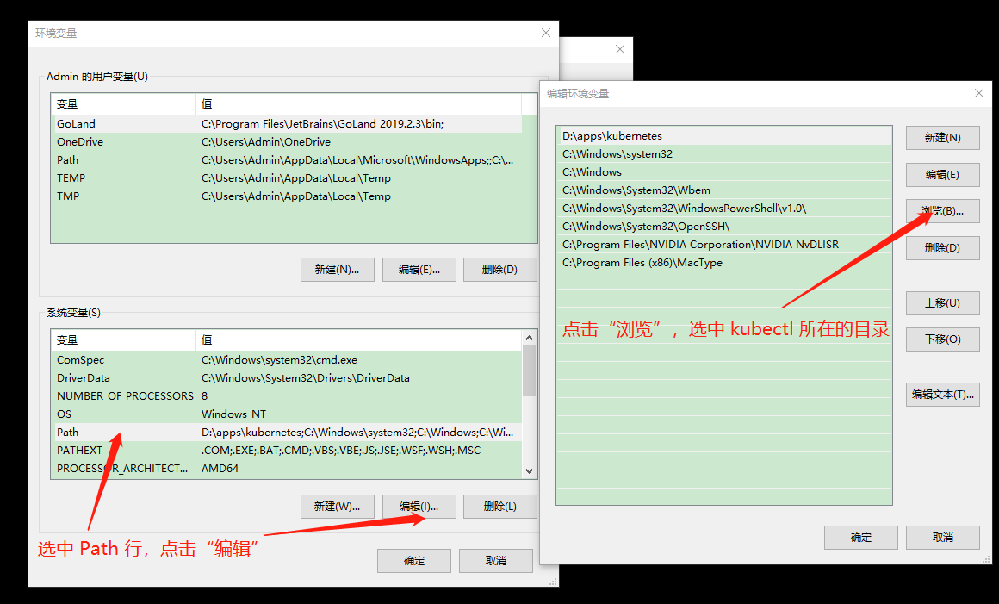
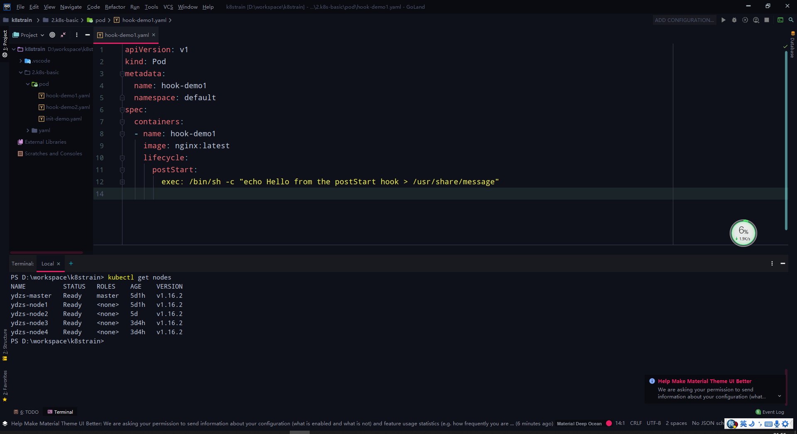

技巧¶
Kubernetes 使用过程中的一些奇技淫巧
Windows 系统最佳实践¶
有部分同学是使用的 Windows 系统，我们的直播课程也是在 Windows 系统下面进行的，然后通过 SSH 方式连接到 服务器上面操作 Kubernetes，由于对 vim 不是很熟悉，所以又通过 sftp 的方式在本地编写资源清单文件同步到服务器上面执行的，这个过程比较繁琐，效率不高。下面就来介绍下在 Windows 系统下面配置 kubectl 的实践方式，当然如果你是 Mac 或者 Linux，思路基本都是一致的。
kubectl 配置¶
首先，下载 Windows 版本的 kubectl 二进制文件，地址：https://dl.k8s.io/v1.16.2/kubernetes-client-windows-amd64.tar.gz。
下载链接
由于上面下载链接需要科学上网，所以我这里离线放到到了百度网盘上，可以直接下载：
链接：https://pan.baidu.com/s/1w_2s3mzf1OWSlvgVZFssCA
提取码：fxbc
复制这段内容后打开百度网盘手机App，操作更方便哦将 kubectl 二进制文件下载到本地，解压到目录：D:\apps\kubernetes 下面，然后设置该目录到 PATH 路径下面，操作步骤如下所示：


这样设置完成后就可以在终端中直接直接 kubectl 命令了。现在只需要配置 kubeconfig 文件就可以访问我们的 Kubernetes 集群了。
首先创建 .kube 目录：
$ mkdir ~/.kube # 对应目录: C:\Users\Admin\.kube然后将服务器上面的 kubeconfig（～/.kube/config）文件复制到 Windows 下面的 ～/.kube 目录下面，但是需要注意的是服务器上面的kubeconfig配置文件里面的 apiserver 地址是内网地址，所以我们把这里的地址改成外网IP，保存，然后测试 kubectl 命令：
$ kubectl version
Client Version: version.Info{Major:"1", Minor:"16", GitVersion:"v1.16.2", GitCommit:"c97fe5036ef3df2967d086711e6c0c405941e14b", GitTreeState:"clean", BuildDate:"2019-10-15T19:18:23Z", GoVersion:"go1.12.10", Compiler:"gc", Platform:"windows/amd64"}
Unable to connect to the server: x509: certificate is valid for 10.96.0.1, 10.151.30.11, not 123.59.188.11我们可以看到会提示证书错误，大概意思就是服务端的证书没有包含我们的外网 IP，所以我们通过外网 IP 去访问就证书校验失败了，这个时候怎么办呢？要解决这个问题主要有两个方法：
第一个就是在我们最开始初始化集群的时候通过 kubeadm 的配置文件指定参数 apiServerCertSANs 的时候，将外网IP也包含着里面，但是我们集群已经安装好了，这个方法肯定不适用了。
第二个方法我们去服务器上面看看我们的 apiserver 证书的详细信息：
$ openssl x509 -in /etc/kubernetes/pki/apiserver.crt -noout -text
Certificate:
Data:
Version: 3 (0x2)
Serial Number: 9203698167925060590 (0x7fba1ab86f1633ee)
Signature Algorithm: sha256WithRSAEncryption
Issuer: CN=kubernetes
......
X509v3 extensions:
X509v3 Key Usage: critical
Digital Signature, Key Encipherment
X509v3 Extended Key Usage:
TLS Web Server Authentication
X509v3 Subject Alternative Name:
DNS:ydzs-master, DNS:kubernetes, DNS:kubernetes.default, DNS:kubernetes.default.svc, DNS:kubernetes.default.svc.cluster.local, IP Address:10.96.0.1, IP Address:10.151.30.11
Signature Algorithm: sha256WithRSAEncryption
01:1a:63:1a:f8:4e:f4:cd:7c:79:4b:64:2d:4e:a3:5a:13:80:
13:60:ca:46:ee:2d:3e:61:51:15:45:19:23:2a:09:d9:46:b3:
......我们仔细看上面 DNS 区域就是包含的校验的域名，后面还有 IP，是不是其中就有我们的 master 节点的 hostname（ydzs-master），到这里大家想到方法了吗？
我们是不是可以直接在本地的 /etc/hosts 里面做一个 APIServer 的外网 IP -> ydzs-master 的映射，然后在本地的 kubeconfig 文件中把 apiserver 地址替换成 https://ydzs-master:6443 是不是就 OK了啊。
所以接下来直接在本地修改 hosts 映射即可，要注意用管理员身份打开文件 C:\Windows\System32\drivers\etc\hosts，然后在文件里面添加一行映射：
# localhost name resolution is handled within DNS itself.
# 127.0.0.1 localhost
# ::1 localhost
123.59.188.11 ydzs-master然后保存即可。这个时候我们再到 powershell 中去执行下 kubectl 命令呢：
$ kubectl version
Client Version: version.Info{Major:"1", Minor:"16", GitVersion:"v1.16.2", GitCommit:"c97fe5036ef3df2967d086711e6c0c405941e14b", GitTreeState:"clean", BuildDate:"2019-10-15T19:18:23Z", GoVersion:"go1.12.10", Compiler:"gc", Platform:"windows/amd64"}
Server Version: version.Info{Major:"1", Minor:"16", GitVersion:"v1.16.2", GitCommit:"c97fe5036ef3df2967d086711e6c0c405941e14b", GitTreeState:"clean", BuildDate:"2019-10-15T19:09:08Z", GoVersion:"go1.12.10", Compiler:"gc", Platform:"linux/amd64"}是不是全都 OK 了呀~
IDE 配置¶
当然 kubectl 工具配置好以后，我们就可以直接操作集群了，随便用什么工具编写 YAML 清单文件操作都可以，当然为了更好的实践方式，可以选择一些比较顺手的工具，比如 vscode 之类的编辑器，我这里使用的是 Goland 这个 IDE。对于 Idea 的 IDE 都可以一样的操作。
- 为了页面美观，可以安装一个
Material Theme UI的主题插件 - 为了编写 YAML 文件方便，还需要安装一个名为
kubernetes的插件，这样我们在编写资源清单的时候就可以自动提示了 - 更改默认的 IDE 的 terminal 为 Powershell：
open File=>Setting=>Tools=>Terminal, 将cmd.exe修改为powershell.exe保存，重启 IDE 即可。
最终的配置效果如下图所示：
